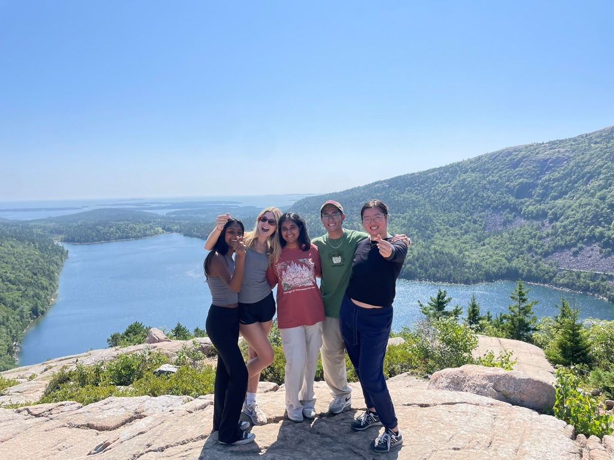

Acadia National Park, Maine
As I mentioned earlier, travel is not limited to international trips. There is plenty to learn from traveling nationally too, which for me is in the United States. This past summer (2024), I went to Acadia National Park in Maine with my friends. I actually met them during a month-long study abroad in Vietnam and Cambodia. We all have a huge passion for travel and have been travel buddies since! I was working in New York City at the time and took the bus into Boston so we could all drive to Maine together. It was such a fun experience, especially reuniting with them after being away for so long. The East Coast has a huge diner culture and we are all huge foodies. Perfect combo. On our way up to Maine, we stopped in New Hampshire at a diner for dinner. It was a great experience and we ended up trying a couple diners in Maine as well which were also amazing! By the time we reached the campsite, it was almost midnight. We had to set up our tent in the dark - not an easy experience considering it was our first time camping (except for one person). We made it out alive though and successfully set everything up! But going back to my first statement. There was still so much to experience, despite being in the same country as I grew up in. I've never fully lived in nature as I did during this trip. I remember one night we decided to go to the lake to see the stars and it was breathtaking. The serenity and peace that I felt from this trip was unlike anything I've ever experienced.
Below, are my main takeaways from this trip:
- Camping isn't scary. I've always been scared of just being out in the wild, but it's a grounding experience and perfect for escaping New York City's bustling environment.
- Enjoy the little things. Was everything perfect on this trip? No. But did it feel like it was pure bliss? Yes. Enjoy the little things and you will never be unhappy.